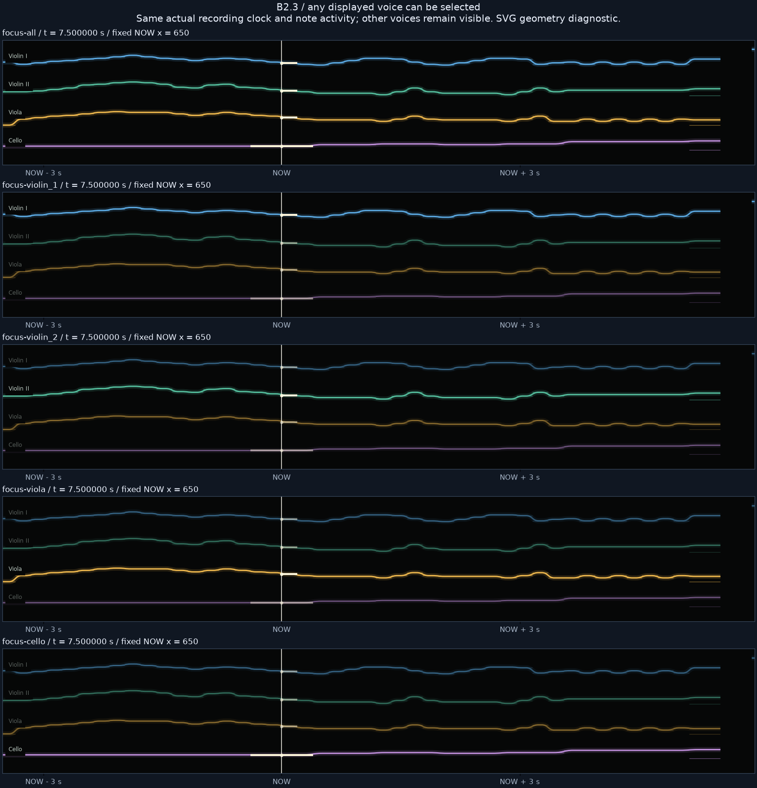
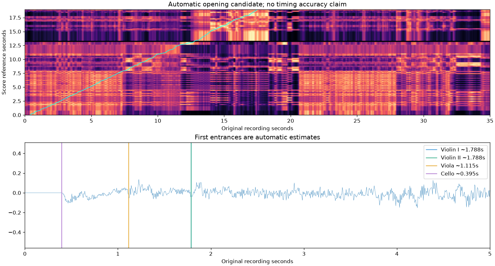

R/R RIBBON ROOM실험 기록 · 이전 결과를 보존한 검토 화면입니다. 새 그래픽 작업은 작업실에서 이어갑니다.
다른 실험 보기
B2.3 · 원하는 성부를 선택하기
한 성부를, 눈과 귀로 따라가기.
멘델스존 Op.80 I악장 · Musopen String Quartet 실제 합주 녹음. 현재는 악보의 각 파트를 성부 선택 단위로 사용합니다.
소리는 악보 유도 강조 실험입니다. 선택한 성부의 음높이 성분을 부각하며, 같은 음·배음을 공유하는 다른 악기와 잔향도 들릴 수 있습니다. 악기별로 분리한 원본 트랙은 아닙니다. 악보와 연주의 대응도 자동 초안으로, 정확도와 청취 품질 검토가 남아 있습니다.
전체 · 원음
데이터 준비 중…
비교 방법
“함께 연주하는 구간”으로 이동해 성부를 바꿔 보세요. 선택 성부의 리본은 선명해지고, 나머지도 배경에 남습니다. “소리도 함께 강조”를 끄면 같은 선택을 유지한 채 원음과 비교합니다. 소리 파일을 바꿀 때 현재 위치와 속도를 이어갑니다.
화면 안의 눈금은 악보 기준 초이며 아래 시간은 실제 녹음의 초입니다. 서로 다른 시계를 자동 대응 초안으로 연결했습니다. 소리는 실제 녹음만 처리하며 새 음표 소리를 합성하지 않았습니다.
전체·각 성부 비교 그림

실제 녹음과 악보의 자동 대응 초안

검증 · 성부 선택 검사 · 음원 처리 · 출처 · 보고서
녹음: Musopen String Quartet · 퍼블릭 도메인 배포. 악보: OpenScore · CC0. 성부별 강조의 지각적 효과와 타이밍은 사용자 검토 대기입니다.